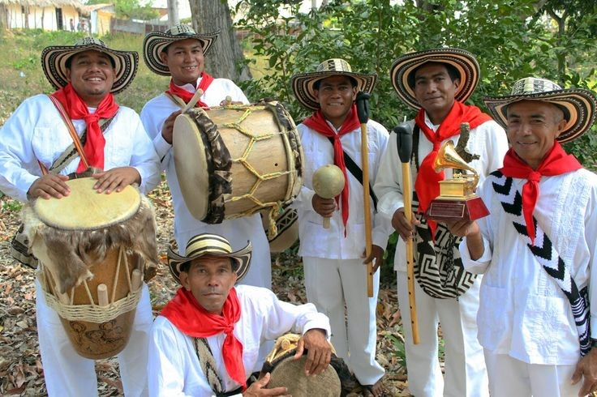

EL CHOCHOLTECOES UNA LENGUA QUE JUNTA AL IDIOMA POPOLOCO
PERTENECE AL GRUPO CHOCHO-POPOLOCA Y ESTE A LAS LENGUAS POPOLONCANAS
PERTENECIENTES.
EL IDIOMA CHOCHOLTECO,CHOCHO,CHUCHON O CHOCHON ES UNA LENGUA
OTOMANGUEANA QUE SE HABLA EN LAS LOCALIDADES OAXAQUEÑAS DE SANTA.
IMAGEN
AUDIO

ES UNA LENGUA DE TIPO ACTIVO-INACTIVO DONDE EL USO DE
PRONOMBRES Y EL TRATAMIENTO DE SUJETO DE UNA ORACION INTRASITIVA
DEPENDE DEL SIGNIFICADO DE DICHO VERBO.